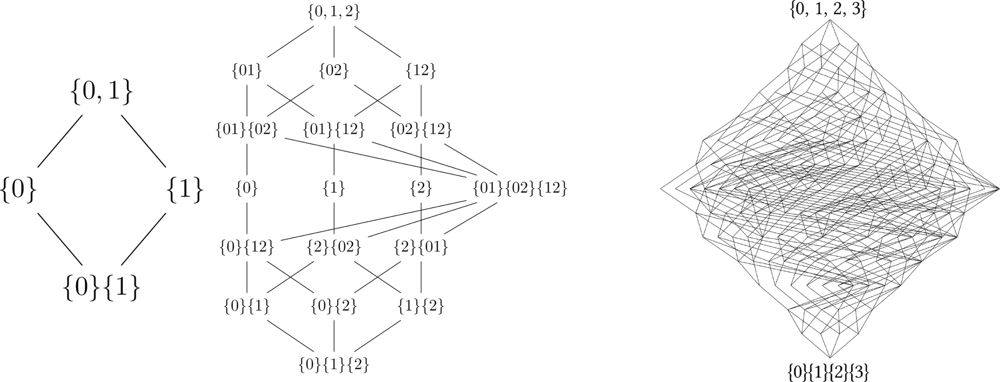
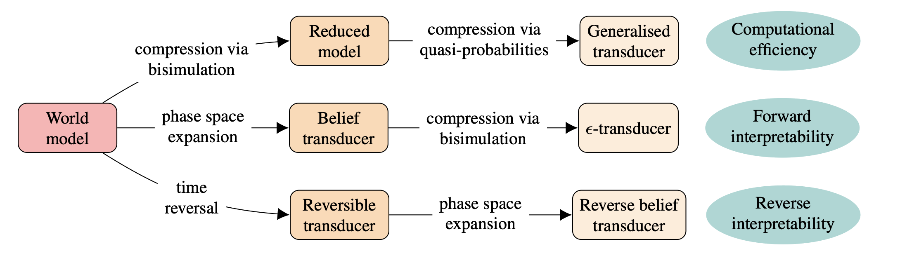
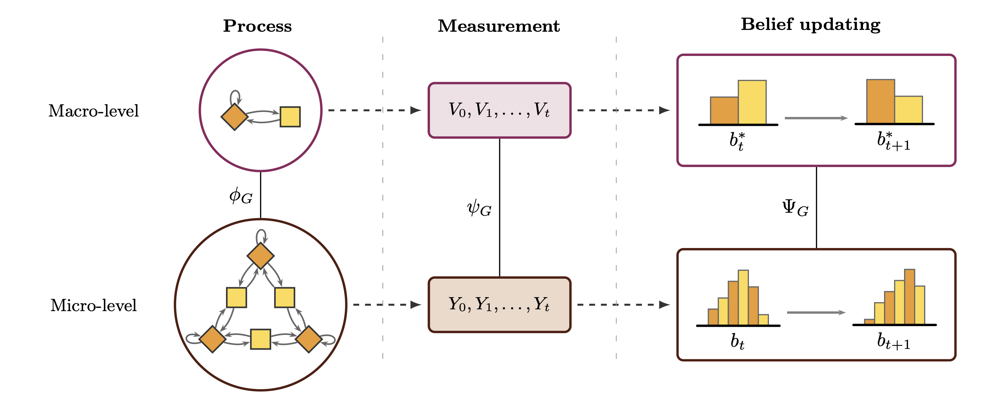
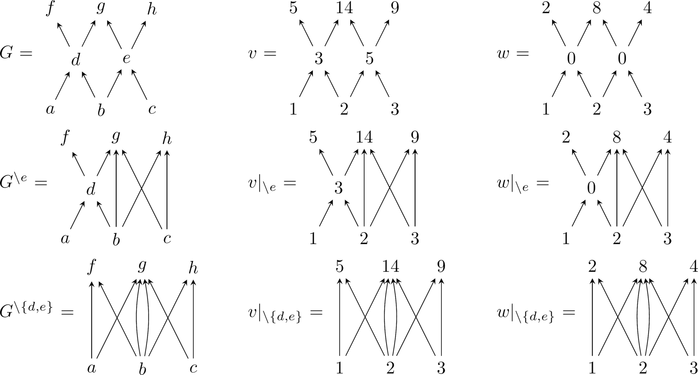
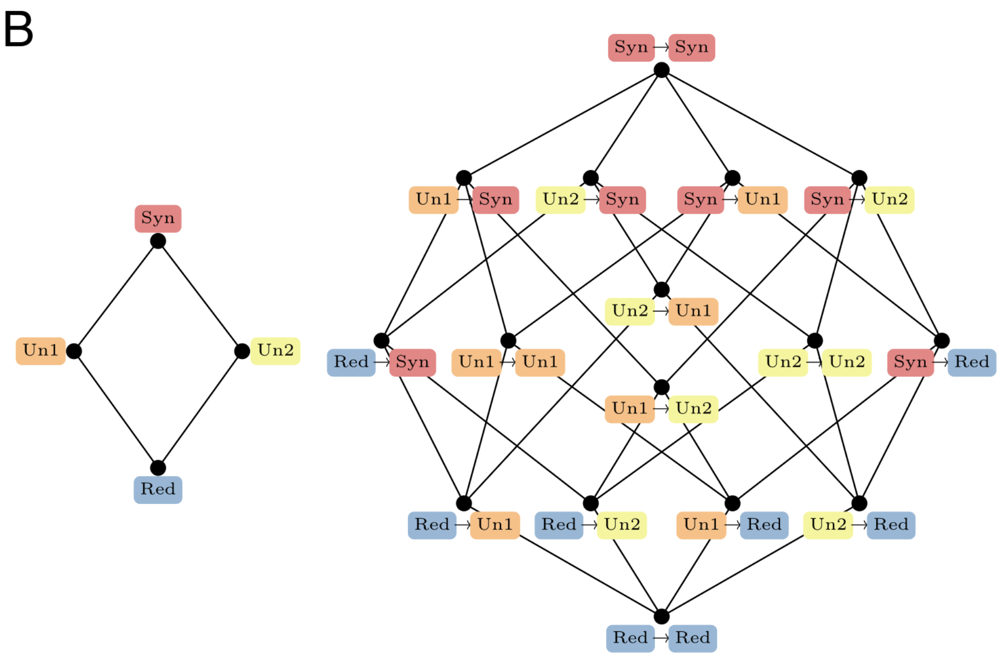

XOR Labs
is a research organisation focused on developing a principled understanding of the capabilities and risks associated with agentic AI systems. We are located in London, and have members and collaborators all over the world.
Members


Collaborators
Select Publications





Agentic systems, unlike purely predictive models, develop capabilities through dynamic interactions with their environments in ways not limited by pre-defined datasets. Moreover, the combination of large multi-modal foundational models and massive datasets enabled by large-scale deployment of robotic AI systems suggests that the capabilities of these systems are likely to increase dramatically in the near future. All this makes the development of agentic AI systems both promising and concerning, for being potentially more powerful than predictive systems, but also substantially more difficult to assess and control.
Our goal is to develop techniques to ensure that advanced agentic systems remain robustly aligned with human goals. To this end, we pursue three key research directions.
1. Agentic interpretability
Most views today treat agency as something in the eye of the beholder (e.g. Dennett's intentional stance), or as an a priori property of a learning paradigm (e.g. reinforcement learning) or system architecture. Instead, we investigate the potential of understanding agency as stemming from specific functional sub-systems that enable capabilities associated with world modelling and planning, resulting in specific risk profiles.
This position opens important questions: is it possible to detect (and even anticipate) when an AI system becomes agentic during training? Can we map this transition with the development of specific circuits that can spontaneously emerge over training? Is this development continuous or abrupt? Are those circuits causally linked to specific capabilities and risks?
To address these questions, we combine principles of reinforcement learning, control theory, causal abstractions, information theory, and computational mechanics to build techniques to reverse-engineer what is the world model that an agent possesses, and how this is used for planning. We also use techniques developed for studying biological organisms, biomolecular devices, and other non-equilibrium systems and applying them to the problem of AI agency.
To study world models in a scalable manner, we are investigating two approaches:
- Modular world models, composed by pieces that interact in specific ways.
- Multi-level world models, which can be rendered at various levels of resolution.
In parallel, we are also investigating how to leverage ideas from the enactive tradition (e.g. autopoiesis and sense-making) to investigate the emergence of intrinsic norms, and how this relates to intrinsic rewards and self-maintenance.
Our vision is that agency is a multi-dimensional notion, and qualitatively different kinds of agents exist: e.g. agents that build world models and plan but don't have much at stake versus agents that are integrated with their embodiment but don't plan or model much. Clarifying the pros and cons of different kinds of agents is paramount in order to design robust and safe systems.
Reading list
- Wooldridge, M., & Jennings, N. R. (1995). Intelligent agents: Theory and practice. The knowledge engineering review, 10(2), 115-152.
- Barandiaran, X. E., Di Paolo, E., & Rohde, M. (2009). Defining agency: Individuality, normativity, asymmetry, and spatio-temporality in action. Adaptive behavior, 17(5), 367-386.
- Kolchinsky, A., & Wolpert, D. H. (2018). Semantic information, autonomous agency and non-equilibrium statistical physics. Interface focus, 8(6), 20180041.
- Rosas, F., Boyd, A., & Baltieri, M. (2025). AI in a vat: Fundamental limits of efficient world modelling for agent sandboxing and interpretability. Reinforcement Learning Journal, 2025.
- Boyd, A., Nowak, F., Hyland, D., Baltieri, M., & Rosas, F. E. (2025). From monoliths to modules: Decomposing transducers for efficient world modelling. arXiv preprint arXiv:2512.02193.
- Shai, A., Amdahl-Culleton, L., Christensen, C. L., Bigelow, H. R., Rosas, F. E., Boyd, A. B., ... & Riechers, P. M. (2026). Transformers learn factored representations. arXiv preprint arXiv:2602.02385.
- Rosas, F. E. (2025). Symmetries at the origin of hierarchical emergence. arXiv preprint arXiv:2512.00984.
- Rosas, F. E. (2026). Adaptive state-action abstractions via rate-distortion. arXiv preprint arXiv:2606.06123.
2. Risks of collective agency
Existing techniques for understanding the capabilities of individual agents do not always scale to complex multi-agent AI systems. Crucially, failure modes of these systems are not restricted to simple cases of discoordination or variants of the "tragedy of the commons", but also include emergent phenomena that are particularly dangerous for their potential scale and impact.
Research in AI, and more broadly on complex adaptive systems, has shown that new goals, behaviours, and capabilities can emerge when multiple sub-components are combined. This synergy makes the whole "more than the sum of its parts", being both a blessing and a curse for multi-agent systems as it renders these systems extremely capable but also very hard to predict, align, and control. What is particularly concerning is that these emergent effects have the potential to let a misaligned, powerful collective "macro-agent" arise from the interactions of aligned and not particularly capable "micro-agents."
One consequence of the above is that current methods for causal attribution in multi-agent AI systems assign responsibility to individual agents (e.g. via Shapley values), but usually miss emergent failures that arise solely through interaction. We are developing frameworks for decomposing harmful outcomes into contributions from individual agents acting alone, from multiple agents acting independently, and from groups of agents acting jointly in ways no agent could produce on its own.
Reading list
- Levin, M. (2019). The computational boundary of a "self": developmental bioelectricity drives multicellularity and scale-free cognition. Frontiers in psychology, 10, 493866.
- Rosas, F. E., Mediano, P. A., Jensen, H. J., Seth, A. K., Barrett, A. B., Carhart-Harris, R. L., & Bor, D. (2020). Reconciling emergences: An information-theoretic approach to identify causal emergence in multivariate data. PLoS computational biology, 16(12), e1008289.
- Rosas, F. E., Geiger, B. C., Luppi, A. I., Seth, A. K., Polani, D., Gastpar, M., & Mediano, P. A. (2024). Software in the natural world: A computational approach to hierarchical emergence. arXiv preprint arXiv:2402.09090.
- Mediano, P. A., Rosas, F. E., Luppi, A. I., Carhart-Harris, R. L., Bor, D., Seth, A. K., & Barrett, A. B. (2025). Toward a unified taxonomy of information dynamics via integrated information decomposition. Proceedings of the National Academy of Sciences, 122(39), e2423297122.
- Jansma, A., Mediano, P. A., & Rosas, F. E. (2025). Fast Möbius transform: An algebraic approach to information decomposition. Physical Review Research, 7(3), 033049.
- Gutknecht, A. J., Rosas, F. E., Ehrlich, D. A., Makkeh, A., Mediano, P. A., & Wibral, M. (2025). Shannon invariants: A scalable approach to information decomposition. arXiv preprint arXiv:2504.15779.
3. Capabilities and dangers of metacognitive agents
Highly capable agents can reason about their own reasoning — an ability typically described as 'metacognition'. Metacognition is closely related to powerful capabilities such as being situational or self-awareness, or being able to model what other agents may be thinking. Such abilities are hard to account for in standard frameworks like reinforcement learning or control theory. A rapidly growing literature is now probing metacognition in LLMs, but it is not obvious the extent to which these works are addressing the same issue that neuroscience and cognitive science would recognise as metacognition.
Our approach to this question has three components. First, we assess the foundations of metacognition in neuroscience and cognitive science and map how far these lines of work have effectively transferred to LLM research. Second, we do fundamental work on formalising various aspects of metacognition from first principles, and investigate what capabilities are associated with it and how it affects the steerability of agents. Third, we design novel experiments to detect levels of metacognition in LLMs. A central question is whether signatures of metacognition in LLMs are indicative of specialised metacognitive sub-systems that control lower-level processing.
References
- Nelson, T. O., & Narens, L. (1990). Metamemory: A theoretical framework and new findings. Psychology of Learning and Motivation, 26, 125–173.
- Kadavath, S., Conerly, T., Askell, A., et al. (2022). Language models (mostly) know what they know. arXiv:2207.05221.
- Jiang, N., Kauvar, I., & Lindsey, J. (2026). The Value Axis: Language models encode whether they're on the right track. arXiv:2606.17056.
- Lindsey, J. (2026). Emergent introspective awareness in large language models. arXiv:2601.01828.
- Comsa, I. M., & Shanahan, M. (2025). Does it make sense to speak of introspection in large language models? arXiv:2506.05068.
- Hyland, D., Ornia, D., Bishop, N., Dyer, J., Macmillan-Scott, O., Gavenciak, T., Calinescu, A., Wooldridge, M., Rosas, F., & Ortega, P. Safe AI should be bounded and multi-agent. Under revision for NeurIPS 2026.
Balance between ambitious theory and useful practice. Impactful work on AI alignment and safety cannot rest on empirical heuristics alone, but must be anchored in fundamental theory capable of delivering rigorous guarantees. This requires approaches that leverage theory to pursue ambitious goals that empirical methods alone cannot reach, while delivering techniques that can be practically useful within a short time horizon. Holding such a balance between theory and practice sits at the core of XOR Labs.
Methodological pluralism. Rather than identifying ourselves with specific methodological traditions, XOR Labs is organised by the question we tackle — agentic risk. Furthermore, we embrace the fact that to fully address these questions requires a diversity of techniques. Thus, keeping methodological pluralism is another core value in XOR Labs.
Interdisciplinary. The question of agency has been studied by reinforcement learning, control theory, cognitive science, cybernetics, economics, ethology, and many other disciplines, and AI alignment has a lot to gain by connecting to this rich body of work rather than reinventing it. We are equally committed to bridging academia and industry, publishing in high-profile venues while also maintaining close collaboration with industry labs, applied teams, and the broader safety community.
Maximal synergy. The exclusive-OR gate is maximally synergistic, as neither input alone can specify its output but together they fully determine it. We take this as our guiding principle for research, as the most valuable work we can do is work none of us could do alone. Thus, we greatly value the diversity of backgrounds among our members and structure our research to promote synergistic collaborative work.